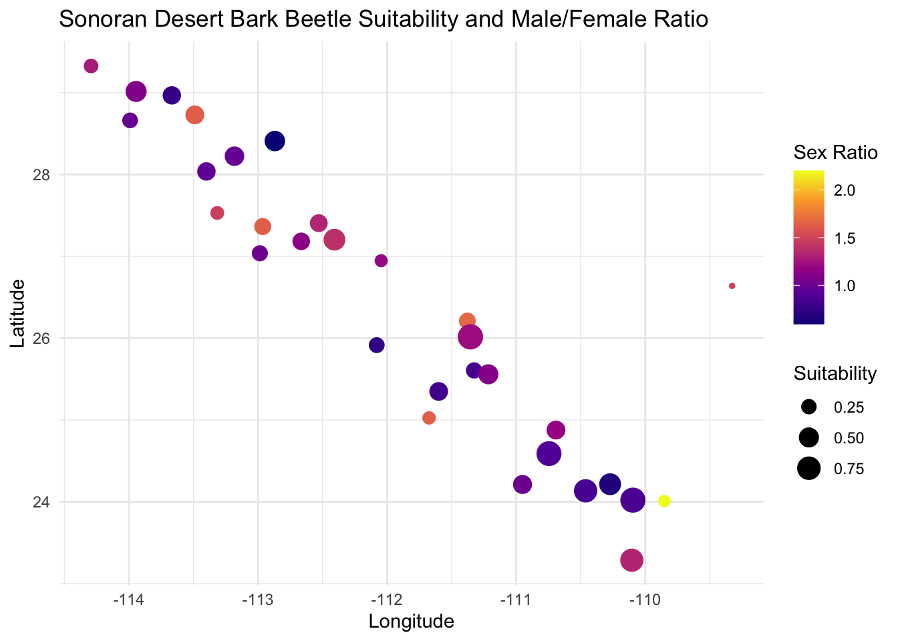
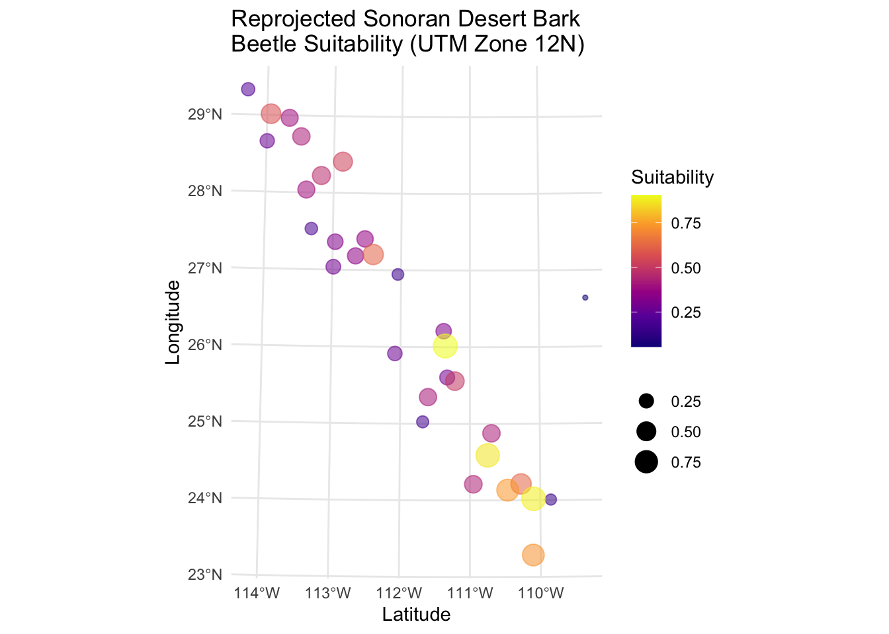

options(repos = c(CRAN = "https://cloud.r-project.org/")) # ran into mirror issues
needed_libraries <- c("sf",
"maps",
"units",
"rgdal", #not available in the version of R
"rgeos", #not available in the version of R
"GGally",
"raster",
"mapproj",
"leaflet",
"rnaturalearth",
"rnaturalearthdata"
)
# Determines which libraries you do not have
# already installed.
need_inst <- setdiff( needed_libraries,
rownames( installed.packages()) )
# Install the necessary ones.
if( length( need_inst ) ) {
install.packages( need_inst, dependencies = TRUE )
library(dplyr)
library(geosphere)
library(ggplot2)
library(leaflet)
library(sf)
library(tidyverse)
library(scales)
library(viridis)
}
This homework is a bit quick but is designed to make sure that:
- To make sure everyone can get their computer up-to-date with the proper set of libraries so that we can work with geospatial data, and
- Give you some practice turning normal numerical data into geospatial coordinates and performing basic operations.
Spatial Libraries
The following code defines the set of necessary libraries for the next few weeks and then figures out which (potential) subset you need to install. It then installs them all in one call. It will not load them into your session, you’ll have to do that later in your code chunks.
The Data - Preprocessing
The data for this is some site-level data from the Sonoran Desert bark beetle. The URL is in the next chunk, and is currently being hosted on my class Github repository. Load it in.
url <- "https://raw.githubusercontent.com/dyerlab/ENVS-Lectures/master/data/Araptus_Disperal_Bias.csv"
beets <- read_csv(url)
#head(beets) #looking at data #hastagged out for the sake of my htmlInteractive Map
Use the leaflet library and make an interactive map. If you can, add a label to each marker with the ID of the site. You can look at the provider tiles here and use on in the addProviderTiles() function.
There is a great tutorial here on how to customize the leaflet display. You may want to go look at it and see what you can use to make a better display.
# make a quick leaflet map here to get an idea of
beets <- beets %>%
mutate(Label = paste ("Site:", Site,
"<br>Males:", Males,
"<br>Females:", Females,
"<br> Suitability:", Suitability))
leaflet (beets) %>%
addMarkers (~Longitude,
~Latitude,
popup = ~Label,
) %>%
addProviderTiles("Esri.NatGeoWorldMap")Converting to sf Objects
Convert the spatial data in the beetle data.frame into an sf object. Make sure you set the Coordinate Reference System to \(4326\).
# convert raw data to simple features in your data.frame
sf_beets <- beets %>%
st_as_sf (coords = c("Longitude",
"Latitude"),
crs = 4326)
#head(sf_beets) #looking at data #hastagged out for the sake of my htmlQuestions
For these questions, you may want to look at the sf cheat sheet here to find the appropriate geospatial function.
- How far apart (in km) are the sites Constitución (
const) and San Francisquito (sfran)?
beets_sf <- st_as_sf(beets, coords = c("Longitude",
"Latitude"),
crs = 4326)
const_coords <- beets_sf[beets_sf$Site == "const", ]
sfran_coords <- beets_sf[beets_sf$Site == "sfran", ]
distance_km <- st_distance(const_coords, sfran_coords, by_element = TRUE) / 1000 # converting variables
print(distance_km)290.09 [m]- Is there a correlation between habitat suitability and the ratio of males to female beetles sampled at each locale?
beets <- beets %>%
mutate(sex_ratio = Males / Females)
cor_test <- cor.test(beets$Suitability, beets$sex_ratio)
print(cor_test)
Pearson's product-moment correlation
data: beets$Suitability and beets$sex_ratio
t = -2.3482, df = 29, p-value = 0.02589
alternative hypothesis: true correlation is not equal to 0
95 percent confidence interval:
-0.66049813 -0.05285068
sample estimates:
cor
-0.3997055 Yes there is a correlation between habitat suitabilty and the sex ratio of Sonoran Desert Bark Beetles. In this case we woudl reject the nulll hypothese that wthere was no correlation. (P-value = 0.02589, siglvl = 0.05)
- Make a plot using
ggplotof the data with suitability as the size of the points and the sex ratio as the fill color.
beets <- beets %>%
mutate(sex_ratio = Males / Females)
ggplot(beets, aes(x = Longitude,
y = Latitude,
size = Suitability,
color = sex_ratio)) +
geom_point() +
scale_color_viridis_c(option = "C")+ #Color Blind Friendly
theme_minimal() +
labs(title = "Sonoran Desert Bark Beetle Suitability and Male/Female Ratio",
x = "Longitude",
y = "Latitude",
color = "Sex Ratio",
size = "Suitability")
#Cool Map
size_range <- c(1, 10)
leaflet(beets) %>%
addProviderTiles("Esri.WorldGrayCanvas") %>%
addCircleMarkers(
~Longitude, ~Latitude,
radius = (rescale(beets$Suitability, to = size_range)),
color = ~viridis::viridis(100)[as.numeric(cut(sex_ratio, breaks = 100))],
popup = ~paste("Suitability:", Suitability, "<br>",
"Sex Ratio:", sex_ratio)
) %>%
addLegend(position = "bottomright",
pal = colorNumeric(palette = viridis(100), domain = beets$sex_ratio),
values = ~sex_ratio,
title = "Sex Ratio") %>%
addControl("Sonoran Desert Bark Beetle Suitability and Male/Female Ratio",
position = "topright",
className = "map-title")- Reproject the data and plot it again using an EPSG code defined for Mexico UTM zone 12N (see epgs.io for projections).
sf_beets <- beets %>%
st_as_sf(coords = c("Longitude", "Latitude"), crs = 4326)
utm_beets <- st_transform(sf_beets, crs = 32612)
ggplot(utm_beets) +
geom_sf(aes(size = Suitability,
color = Suitability,
alpha = 0.5)) +
scale_size_continuous(name = NULL) +
scale_color_viridis_c(option = "C")+ #Color Blind Friendly
theme_minimal() +
guides(alpha = "none",
Suitability = "") +
labs(title = "Reprojected Sonoran Desert Bark\nBeetle Suitability (UTM Zone 12N)",
x = "Latitude", y = "Longitude")
We failed to find a significant relationship between sepal length and width (Pearson Correlation, \(\rho\) = -0.4284401, P = 4.5133143^{-8}).